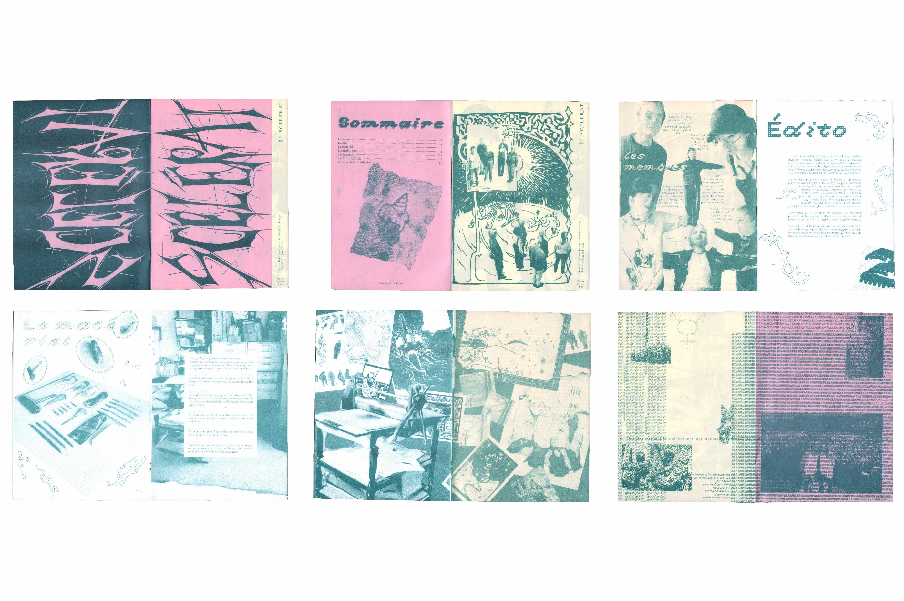
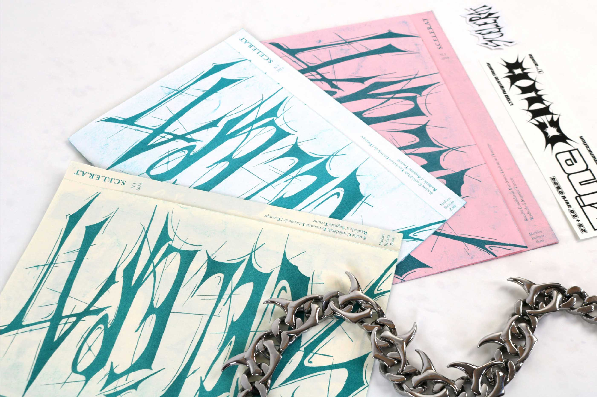
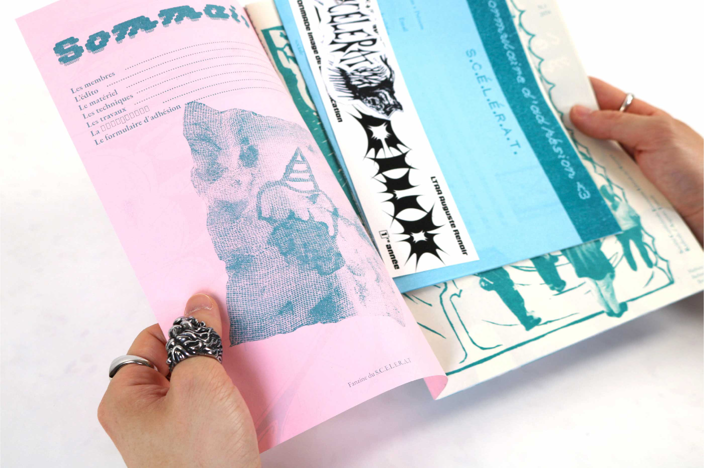
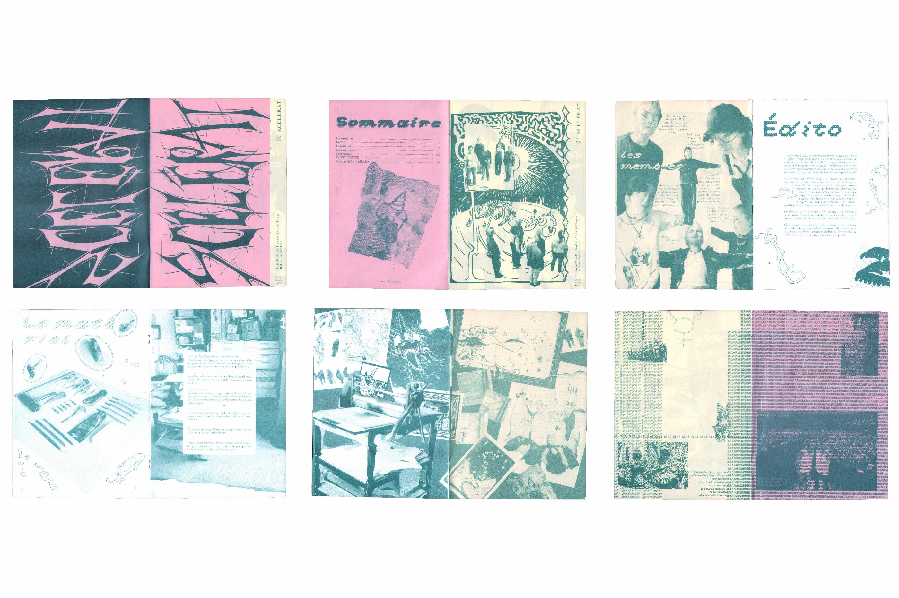
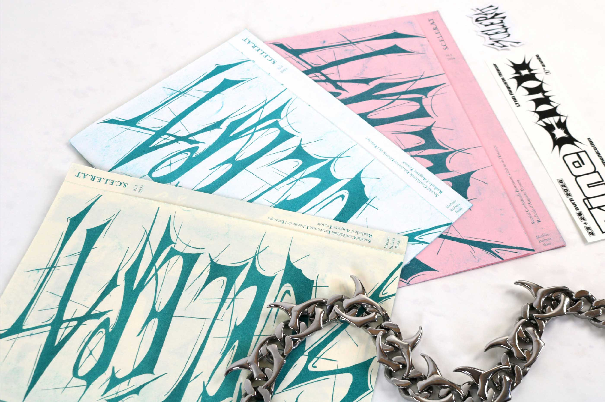
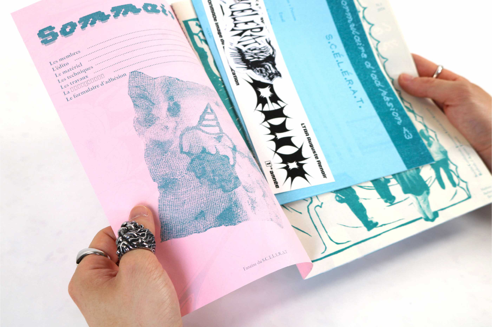

Réalisé en groupe lors d’un workshop, Scélérat est un fanzine en risographie inspiré par la gravure. À l’image de son nom, le projet détourne les codes classiques pour construire une progression visuelle de plus en plus étrange et inattendue. Les contraintes de l’impression ont été pleinement assumées et intégrées comme un parti pris, afin de produire un objet éditorial cohérent et radical.
 




